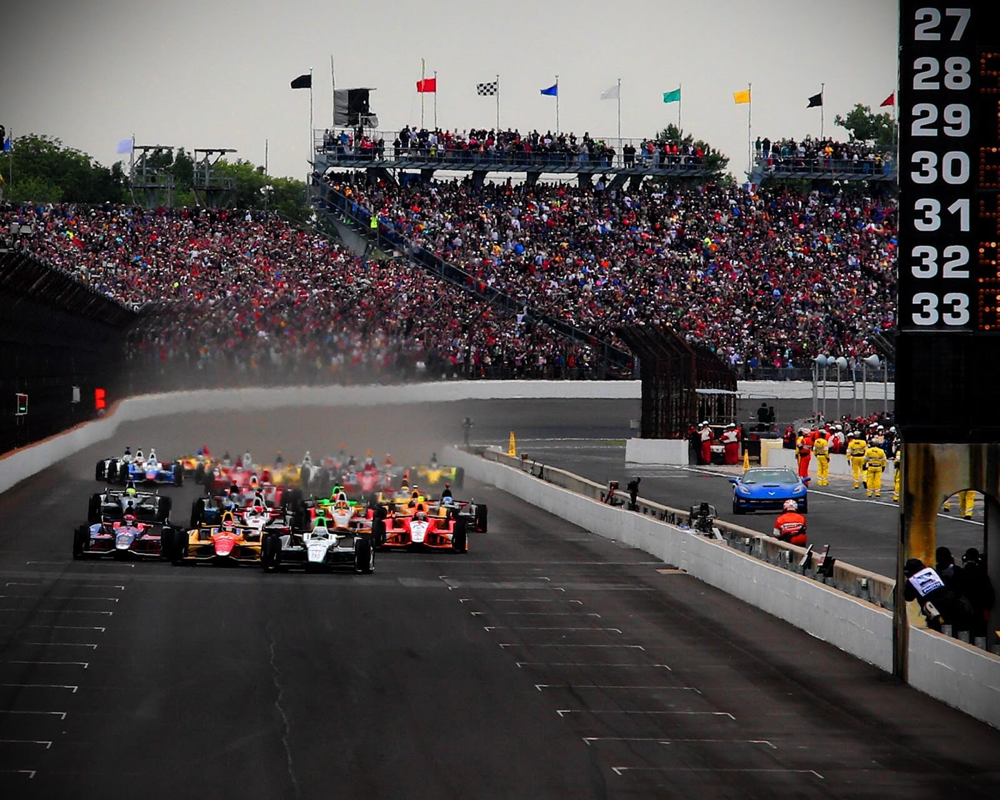

Dakar:
Para llegar primero, primero hay que llegar Las 24 horas de Le Mans se rigen por una máxima bastante simple: para llegar primero, primero hay que llevar. Un nuevo ejemplo de como máquinas y pilotos son llevados hasta el límite. Se podría decir que la carrera disputada en el trazado semipermanente de La Sarthe es un sprint de 24 horas de duración en el que tan sólo ganan aquellas máquinas y equipos que son capaces de superar cualquier impedimento. 56 participantes, repartidos en cuatro clases distintas, que luchan contra sus rivales y contra ellos mismos. Pero no acaban ahí las piedras en el camino. Si algo caracteriza a las 24 horas de Le Mans es la competición en plena noche que convierte cada adelantamiento y cada doblaje en una situación de riesgo. De nada sirve correr sin sentido ya que una de las normas establece que para constar como clasificado es obligatorio cruzar la línea de meta.
24 horas de Le Mans:
Sin lugar a dudas, el Rally Raid Dakar, conocido desde hace unos años simplemente como Dakar, es la competición automovilística más dura del planeta. Dos semanas en las que máquinas y pilotos dan lo máximo de si mismos etapa tras etapa llegando en muchos casos hasta la extenuación y a veces, por desgracia, la muerte. A pesar de nacer con carácter amateur, la dureza y fama del Dakar atrajo la atención de las grandes marcas y en los últimos años los esfuerzos de Mitsubishi, Volkswagen o BMW han vuelto a colocar al Dakar en el radar de todos los aficionados. Cada enero, el Dakar se convierte en la primera gran cita deportiva del año. Una cita tan especial que no necesita de un campeonato para tener repercusión e interés.